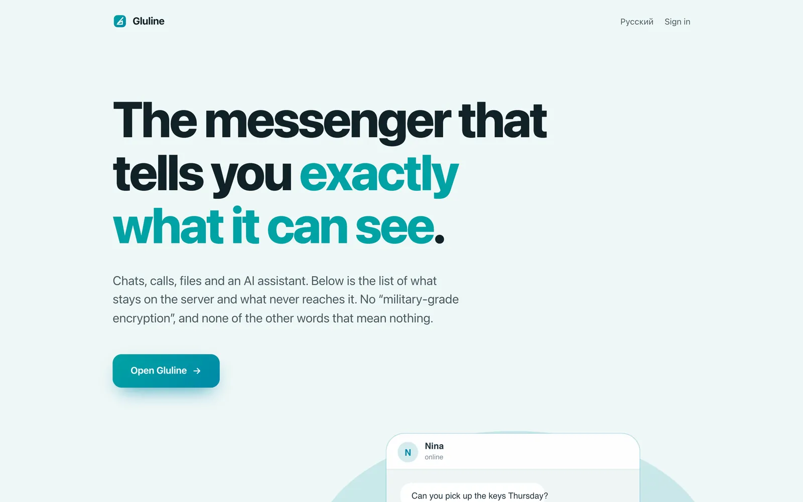

Work / 2 of 6
Gluline
A messenger for people who want to know exactly who can read what. On the App Store, Google Play and the web, in ten languages.
- from the first files to the App Store
- 4½ months
- clients, in one repository
- iOS, Android, web
- languages
- 10
- unit tests at the release gate
- 309
The chat list
A group chat, and the assistant asked about it
Voice and video calls

Four and a half months
The oldest files are from the start of April 2026. On 19 August Gluline went live on the App Store, then on Google Play, with a web client at gluline.com.
It is one repository: Android in Jetpack Compose, iOS in SwiftUI, the web client, a Python and FastAPI backend, the infrastructure and the protocol documents. The interface follows Apple’s Liquid Glass, and the Android and web clients were rebuilt to match it instead of looking like ports.
From the oldest files to the App Store
A schematic of the dates, graduated in weeks. The two audits are placed by month.
An assistant you switch on yourself
As Head of AI I own everything the product does with a model. The assistant is off until you turn it on, and while it is off your chats are never passed to it. Every chat carries a card that says whether the assistant can read it, and it can be switched off for one conversation without switching it off everywhere.
The card every chat carries
A schematic, not a screenshot: the assistant switched on, and then off for one chat. The switches work.
- A group chat The assistant can read this chat.The assistant cannot read this chat.
- A one-to-one chat The assistant can read this chat.The assistant cannot read this chat.
Can read one of these two chats.
Switched on, it answers questions about the chat you are in, keeps a memory of you that you can read and clear, and any answer it gives can be reported. Voice messages can be transcribed where they sit.
Encryption, as the store listing states it
| Chat content | Encrypted on the device, with a key for each chat |
|---|---|
| That key, on the server | Kept only wrapped to each member’s public key |
| While the assistant is off in a chat | The company holds nothing that opens it |
| One-to-one calls | Encrypted between the two devices |
| Group calls | Pass through a media server that decrypts them to forward them: not end-to-end encrypted |
| Forward secrecy | Not claimed |
How it shipped
Nothing reached a store without clearing a written release checklist: a clean build, 309 unit tests passing, and a check that minification had not broken any of the 15 fields the app sends over the wire.
The release checklist
- A clean build
- 309 unit tests passing
- Minification checked against the 15 fields the app sends over the wire
Two formal audits are on record. April’s raised about 58 findings. August’s, before release, raised 74 candidates and put each through an adversarial second pass: 42 confirmed, and 32 refuted and written down as refuted, so the next audit does not spend time on them again.
August’s audit, before release
74 candidates, one cell each, after the adversarial second pass.
74 candidates
42 confirmed
32 refuted, and written down as refuted